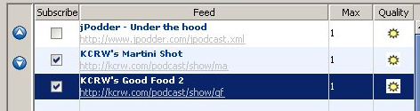
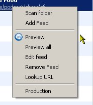

The feed table contains four columns and will show at least two empty rows at the end of the table so that you can always add a new feed with a double click on an empty row. The four columns contain:
| 1. | Subscribe | shows a checkbox to indicated if you subscribed to the feed or not. In the context menu we call it marked |
| 2. | Feed | the title and URL of the feed |
| 3. | Max | maximum number of enclosures downloaded for this feed at one given time |
| 4. | Quality | an image indicating the quality of the feed that can be good (Sun) or bad (Umbrella) which means that a connection could not be established with the server that provides the feed or there is a problem with the feed itself |
The of the table are used to sort the feeds. If a feed is selected the arrows will move them relative to the other feeds. In case of the picture above clicking the up buttom will move the feed in front of the second feed making it the second feed. A click on the down button would make it again the third feed.
You can work with the feeds by either using jPodder's Menu ('Feeds' and 'Enclosures') as well as the context menu in the left table which for example under Windows is activated by pressing the right menu button while the mouse hoovers over the feed table:

Note: The entries in the context menu are enabled or disabled (gray) depending on the position of the mouse and therefore depending on the underlying feed.
The feed context menu contains these entires:
| Scan Folder | allows you to search for available feeds in your feeds directory that are not added to the list currently |
| Add Feed | lets you add a new feed that is added to the end of the list and does not change the current feed |
| Preview | downloads the feed (RSS document) from the given location (URL) |
| Preview All | downloads all the listed and marked feeds |
| Edit Feed | allows you to edit the feed like the location, title but also edit the tags of any audio file (podcast) provided by this feed |
| Remove Feed | removes this feed |
| Lookup URL | lets jPodder try to find the URL of the feed that can be missing after adding a feed after Scan Folder |
| Production | takes the current feed and creates a podcast production using some of the feed's data |